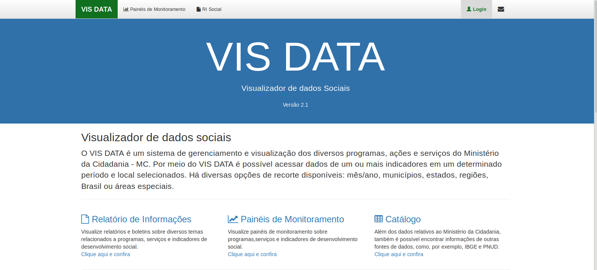
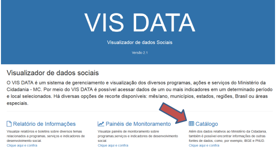
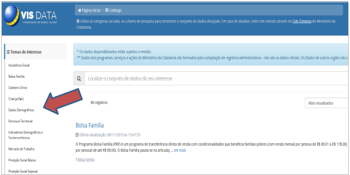
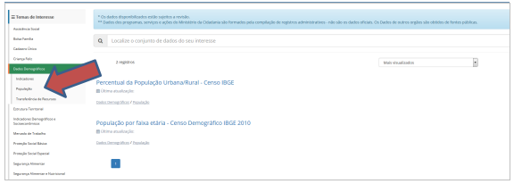
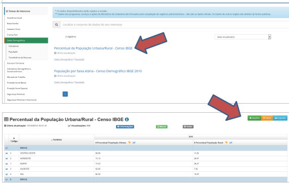
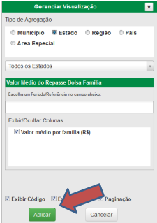

Quantidade de pessoas(média)na família por estado/UF¶
- Passo a passo:
Passo 1: Acesse https://aplicacoes.mds.gov.br/sagi/vis/data/home.php e a seguinte tela será exibida:¶

Passo 2: clique em “Catálogo”:¶

Passo 3: Clique em “Dados Demográficos” na parte esquerda da tela:¶

Passo 4: Após as opções, clique na parte de “População”¶

Passo 5: Procure pela opção “Percentual da População Urbana/Rural -Censo IBGE” e em seguida opções no canto direito da tela:¶

Passo 6: Em “Gerenciar Visualização”, escolha a agregação desejada (Estado/UF) e em seguica clicar em “Aplicar” para obter o resultado¶
